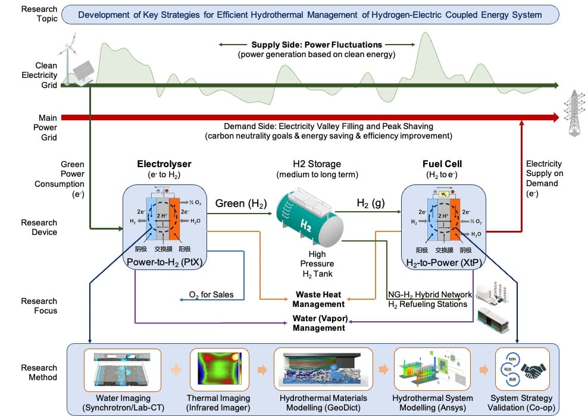

Research Progress 「Science without borders」

Research Interests
From academia to industry, my research dedicated to the fields of clean and efficient energy and low-carbon intelligent transportation, with cross-disciplinary research interests including:
- Renewable Energy, Hydrogen, Fuel Cells, Electrolyser, Solar/PV, Batteries
- Energy Economy, Energy Policy, ESG Investing, Digital Sustainability
- Functional Materials, Semiconductors, Polymers, Metal Oxides
Schematic Overview
「H2-Electricity Coupled Energy Grid
System」

Publications「Science without borders」
- Clean Energy Tech / Electrochemistry
-
S. N. Artigas, H. Xu* [FDB], F. Mack
Use of distribution of relaxation times analysis as an in-situ diagnostic tool for water management in PEM fuel cells applications [J]
Co-author:[Freudenberg] | Cited by:[Tsinghua Univ.]
2024 | J. Power Sources [PDF] -
H. Xu* [PSI], M. Bührer, F. Marone, Prof. T. J. Schmidt, F. N. Büchi, J.
Eller
Effects of gas diffusion layer substrates on PEFC water management: Part II. In situ liquid water desaturation via evaporation [J]
Co-author:[Swiss Light Source] | Cited by:[TOYOTA] [BOSCH]
2022 | J. Electrochem. Soc. [PDF] -
S. van Rooij, M. Magnini, A. Mularczyk, H. Xu* [PSI], F. N. Büchi [PSI], Prof.
S. Haussener
[EPFL]
Conductive heat transfer in partially saturated gas diffusion layers with evaporative cooling [J]
Co-author:[Swiss Light Source] [EPFL]
2022 | J. Electrochem. Soc. [PDF] -
H. Xu* [PSI], S. Nagashima [TOYOTA], H. Nguyen, K. Kishita, F. Marone, F. N.
Büchi, J.
Eller [PSI]
Temperature dependent water transport mechanism in PEFC gas diffusion layers revealed by subsecond operando X-ray tomographic microscopy. [J]
Co-author:[TOYOTA] | Cited by:[BOSCH] [Tsinghua Univ.] [Univ. of Toronto]
2021 | J. Power Sources [PDF] -
H. Xu* [PSI], M. Bührer, F. Marone, Prof. T. J. Schmidt [ETH], F. N. Büchi, J.
Eller
[PSI]
Effects of gas diffusion layer substrates on PEFC water management: Part I. Operando liquid water saturation and gas diffusion properties [J]
Co-author:[Swiss Light Source] | Cited by:[German Aerospace Center] [TOYOTA] [Tsinghua Univ.]
2021 | J. Electrochem. Soc. [PDF] -
C. Csoklich, H. Xu* [PSI], F. Marone, Prof. T. J. Schmidt [ETH], F. N. Büchi
[PSI]
Laser Structured Gas Diffusion Layers for Improved Water Transport and Fuel Cell Performance [J]
Co-author:[Swiss Light Source] | Cited by:[Tokyo Institute of Technology] [Hong Kong Univ. of Science and Technology] [Tsinghua Univ.]
2021 | ACS Appl. Energy Mater. [PDF] -
Y. Nagai [TOYOTA], J. Eller, T. Hatanaka, S. Yamaguchi, S. Kato, F. Marone, H.
Xu* [PSI],
F. N. Büchi.
Improving water management in fuel cells through microporous layer modifications: Fast operando tomographic imaging of liquid water. [J]
Co-author:[TOYOTA] | Cited by:[MIT] [German Aerospace Center] [State Power Investment Co.]
2019 | J. Power Sources [PDF]
- Computational Imaging / Deep Learning
-
M. Bührer, H. Xu* [PSI], A. Hendriksend, F. N. Büchi, J. Eller, Prof. M. Stampanoni [ETH],
F. Marone [SLS]
Deep learning based classification of dynamic processes in time-resolved XTM [J]
Co-author:[Swiss Light Source/PSI] [CWI Amsterdam] | Cited by:[Stanford Univ.] [RWTH Aachen]
2021 | Scientific Reports [PDF] -
M. Bührer, H. Xu* [PSI], J. Eller, Prof. J. Sijbers, Prof. M. Stampanoni [ETH],
F. Marone [SLS]
Unveiling water dynamics in fuel cells from time-resolved tomographic microscopy data [J]
Co-author:[Swiss Light Source/PSI] [Univ. of Antwerp] | Cited by:[Univ. of Tokyo] [Univ. of Toronto]
2021 | Scientific Reports [PDF] -
H. Xu* [PSI], M. Bührer, F. Marone, Prof. T. J. Schmidt [ETH], F. N. Büchi, J. Eller
[ETH]
Optimal image denoising for operando XTM of liquid water in PEFC gas diffusion layers. [J]
Co-author:[Swiss Light Source/PSI] | Cited by:[CAS Dalian Institute of Chemical Physics] [Univ. of Toronto] [Univ. College London]
2020 | J. Electrochem. Soc. [PDF] -
H. Xu* [PSI], F. Marone, S. Nagashima, H. Nguyen, K. Kishita, F. N. Büchi, J. Eller
(Invited) Exploring sub-second and sub-micron XTM imaging of liquid water in PEFC GDLs. [J]
Co-author:[Swiss Light Source/PSI] [TOYOTA] | Cited by:[European Synchrotron Radiation Facility] [US National Fuel Cell Research Center] |[ECS Meeting Travel Award]
2019 | ECS Transactions [PDF] -
H. Xu* [PSI], M. Bührer, F. Marone, Prof. T. J. Schmidt [ETH], F. N. Büchi, J. Eller
[PSI]
Fighting the noise: towards the limits of subsecond X-ray tomographic microscopy of PEFC. [J]
Co-author:[Swiss Light Source/PSI] | Cited by:[Argonne National Laboratory] [TOYOTA] |[Swiss Light Source] |[ModVal Best Poster Award]
2017 | ECS Transactions [PDF]
- Materials Science / Chemical Engineering
-
Prof. H. Zhang, R. Wu, H. Xu* [BJTU], F. Li, S. Wang, J. Wang [BJUT], T. Zhang
A simple spray reaction synthesis and characterization of hierarchically porous SnO2 microspheres for an enhanced dye sensitized solar cell. [J]
2017 | RSC Advances [PDF][BJTU] -
Prof. H. Zhang [BJTU], H. Xu* [BJTU], J. Wan, Prof. L. Yan, C. Dai
Preparations of new porous oxides spherical powders by spray reaction technique. [J]
2012 | Vacuum and Cryogenics [Link][BJTU] -
Q. Xiaoyue, H. Xu* [BJTU], X. Zhou
Degradation of highly active cypermethrin via ultrasonic irradiation combined with photocatalysis by TiO2
2012 | Chemistry Research [Link][BJTU]
Patents
-
Annular gas-liquid interface jigging magnetic separation device [P]
Inventors: Prof. M. Fu, Prof. H. Zhang, H. Xu (BJTU), Prof. L. Yan
Chinese Patent No.: CN102441489B, Granted on Oct 11, 2013. [Grant] -
Continuously operating annular gas-liquid interface jigging magnetic separation device
[P]
Inventors: Prof. H. Zhang, H. Xu (BJTU), Prof. M. Fu, Prof. L. Yan
Chinese Patent No.: CN102441490A, Granted on Nov 1, 2013. [Grant] -
Ultrasonic-photocatalytic oxidation coupled fruit and vegetable cleaning device [P]
Inventors: X. Zhou, H. Xu (BJTU), Prof. H. Jiang, X. Qi
Chinese Patent No.: CN202311136U, Granted on May 9, 2012. [Grant]
Technical Reports
-
H. Xu [TUM], Dr. B. Vinçon-Leite, Y. Luo
Modelling of Cyanobacteria Dynamics for YuQiao Reservoir in Tianjin, China [R]
2016 | Training Report.[École des Ponts ParisTech] &[École Polytechnique] . Paris, France. -
H. Xu [UR1], Dr. W. Lu, Dr. A. Madsen, Prof. S. Di Matteo
Design and Construction of a Test-Stand for the Split and Delay Line at the European XFEL [R]
2015 | Internship Report.[European XFEL] , Hamburg, Germany. [PDF]
Public Datasets
-
TomoBank: X-ray Imaging Dataset of Fuel Cells
Curators: M. Bührer, H. Xu* [PSI], F. Marone
2019 | U.S. Department of Energy - Argonne National Laboratory © Copyright. Rev. f4253f55. [Link]
Conferences
- Electrochemistry / Physics / Materials Science:
-
H. Xu [PSI], M. Bührer, F. Marone, T. J. Schmidt, F. N. Büchi, J. Eller
Influence of Pore Size Distribution on Operando GDL Liquid Saturation.
2019 | 236th Meeting of The Electrochemical Society (ECS), Atlanta, USA. [Speaker] [Link] -
H. Xu [PSI], M. Bührer, F. Marone, T. J. Schmidt, F N. Büchi, J. Eller
Advancements in 10Hz operando X-ray Tomographic Imaging of Water in GDLs of PEFC.
2018 | 8th International Conference on Fundamentals & Development of Fuel Cells (FDFC), Nantes, France. [Speaker] [Link] -
H. Xu [PSI], M. Bührer, F. Marone, T. J. Schmidt, F N. Büchi, J. Eller
Studies of Water Distribution in the Gas Diffusion Layer of PEFCs using X-ray Tomographic Microscopy
2018 | 69th Annual Meeting of the International Society of Electrochemistry (ISE), Bologna, Italy. [Poster] [Link] -
H. Xu [PSI], M. Bührer, F. Marone, T. J. Schmidt, F N. Büchi, J. Eller
Water Distribution in the Gas Diffusion Layer of PEFCs: X-ray Tomographic Microscopy Studies
2018 | 15th Symposium on Fuel Cell Modelling and Experimental Validation (ModVal), Aarau, Switzerland. [Best Poster Award] [Link] -
H. Xu [PSI], M. Bührer, F. Marone, T. J. Schmidt, F. N. Büchi, J. Eller
Quantification of Feature Detectability for Subsecond X-ray Tomographic Microscopy of PEFC.
2017 | 6th European PEFC and Electrolyser Forum (EFCF), Lucerne, Switzerland. [Speaker] [Link] -
H. Xu [PSI], M. Bührer, F. Marone, T. J. Schmidt, F. N. Büchi, J. Eller
Contrast-to-Noise Ratio Evaluation for X-ray Computed Tomographic Imaging of Water in Polymer Electrolyte Fuel Cells
2017 | 14th Symposium on Fuel Cell Modelling and Experimental Validation (ModVal), Karlsruhe, Germany. [Poster] [Link] -
H. Xu [TUM], E. Metwalli, P. Müller-Buschbaum
Nanoparticles Embedded Thermoresponsive Diblock Copolymers for Magnetic Sensor Application.
2016 | Annual Meeting of the EU Erasmus MaMaSELF Project, Rigi Mountain, Switzerland. [Speaker] [Link] -
H. Xu [TUM], E. Metwalli, P. Müller-Buschbaum
Magnetic properties and structure of thermoresponsive polystyrene-block-poly(N-isopropylacrylamide)/iron oxide nanocomposite thin films.
2016 | 80th Annual Meeting of the German Physical Society & DPG Spring Meeting (DPG), Regensburg, Germany. [Poster] [Link] -
H. Xu [BJTU], Prof. H. Zhang, R. Wu
Mesoporous SnO2 Microspheres: Synthesis, Characterization, and Application in Enhanced Dye-sensitized Solar Cells and Lithium Batteries.
2013 | Tsinghua University Energy Particles Frontier Seminar, Beijing, China. [Poster] [Link]
Tech Exhibitions
-
2024 | The Smarter E Europe, Munich, Germany
-
2024 | World Hydrogen Summit & Exhibition, Rotterdam, Netherlands
-
2024 | Hannover Messe: Empowering Sustainable Industry, Hannover, Germany
-
2024 | Handwerk & Design München, Munich, Germany
-
2023 | H2 & FC EXPO, Stuttgart, Germany
-
2023 | IAA Mobility, Munich, Germany
Equity Research
- Industry Macro Research (Greater China Region):
2022 | New Energy Industry: Driving Forces for Entrepreneurship in China's New Energy Industry under the Dual-Carbon Policy
2020 | New Materials Industry: Semiconductor Materials Series Part 4: 5G Driving the Optical Communication Industry Chain, Indium Phosphide Materials Poised for Growth
- Primary Market Research (Series A to D Funded Companies):
2021 | UISEE Technology: Technology Pioneer Series Report on UISEE Technology: Multi-Scenario Autonomous Driving Solution Provider
2021 | SemiDrive Technology: Technology Pioneer Series Report on SemiDrive Technology: Intelligent Vehicle Autonomous IP Chip Provider
2021 | Xi'an ESWIN Semiconductors: Research Analysis Report on Xian ESWIN Semiconductors
- Secondary Market Research (A-Share & US-Listed Companies):
2021 | National Silicon Industry (688126.SH): Leading Large Silicon Wafer Pioneer Driving Chip Localization (Initial Coverage Report)
2021 | CREE (NASDAQ:CREE): Technology Pioneer Series Report on CREE: Global Provider of Power/RF Devices and LEDs (US Stock)
2021 | Jingwei Hirain (688326.SH): Technology Pioneer Series Report on Jingwei Hirain Technology: Automotive Electronics Technology System Service Provider
2020 | TankeBlue (870013.OC): Leading Domestic SiC Wafer Manufacturer
2020 | Hangzhou Li-on Microelectronics (605358.SH): Broad Market for Domestic Substitution, Large Silicon Wafer Industrialization Imminent
2020 | Shandong Sinocera (300285.SZ): Dental Ceramic Materials Industry, Favorable Trends for Zirconia Materials
Contact Me
- Message Board: scholar.h-xu.com/en-contact (Please kindly drop me the
message)
- Online Meeting: calendly.com/heliosxu/45min (1-on-1 meeting, please book in advance)
- LinkedIn: linkedin.com/in/xuhong/ (Followers: +)
- Google Scholar ID: UNchM2kAAAAJ&hl (Citations: +)